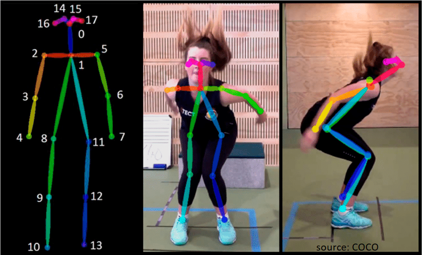
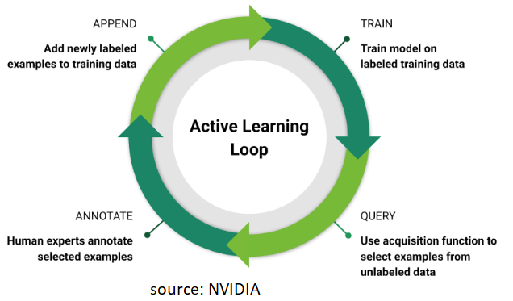
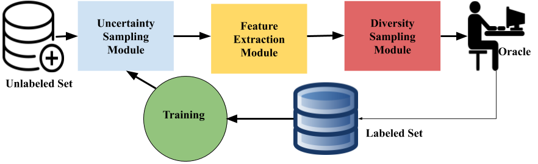
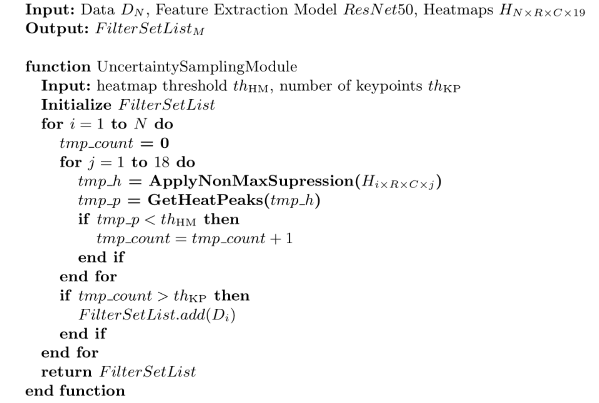
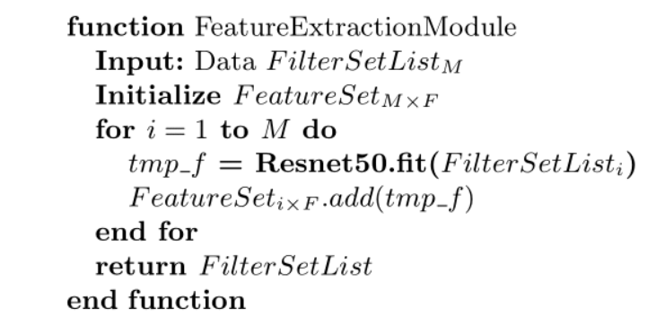
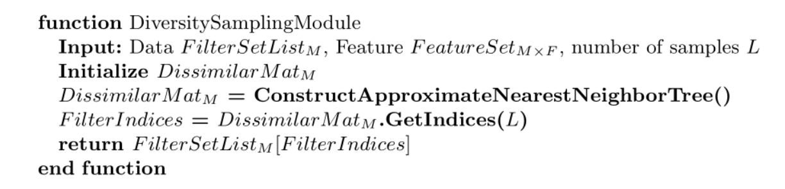
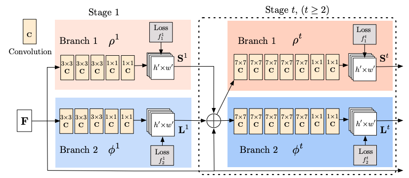
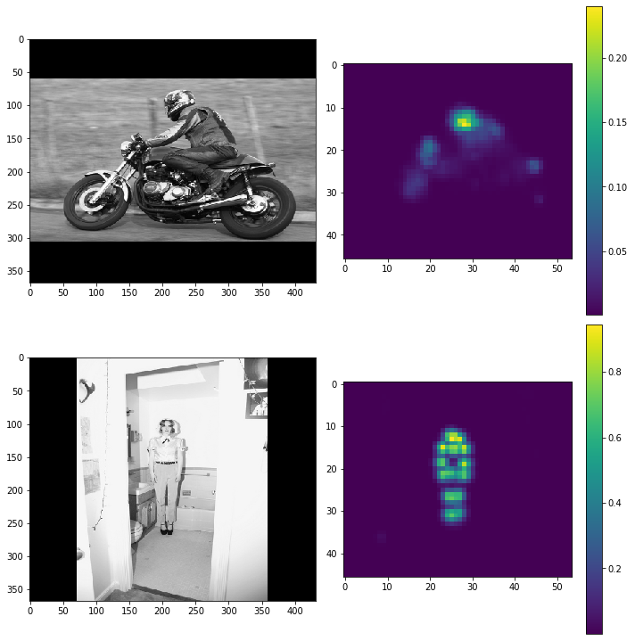
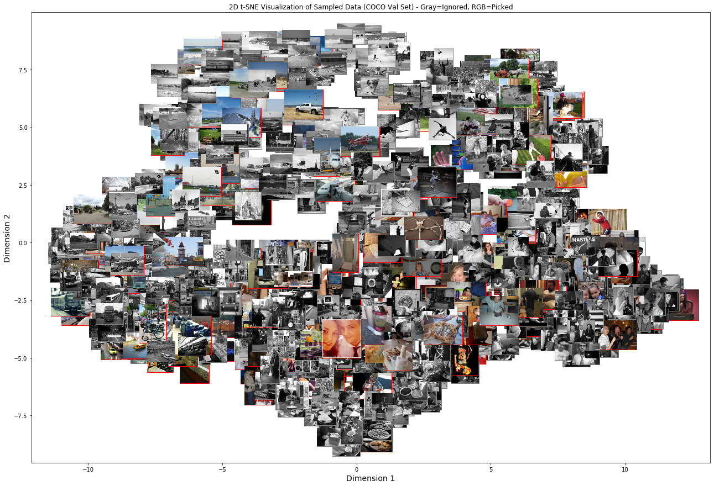
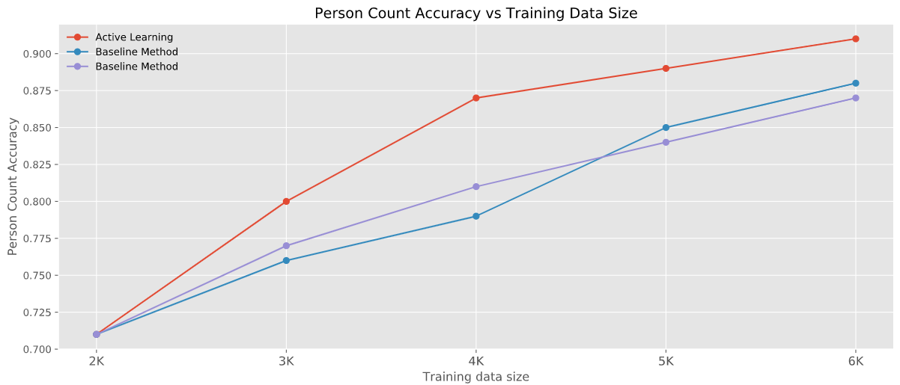

Human Pose Estimation
-
Estimate certain keypoints on human body.

Problem
-
Keypoint annotation is costly.
-
Amount of data required for the task is large.
Solution
-
Apply Active Learning (AL) to train a model iteratively.

Aim of The Study
-
Apply Active Learning for Human Pose Estimation in an online environment.
-
Propose a cost-effective hybrid sampling strategy: uncertainty and diversity.
An Overview of The Proposed Method
-
A hybrid approach with uncertainty and diversity sampling.

Uncertainty Sampling Module
-
Model-based uncertainty sampling.

Feature Extraction Module
-
Taking advantage of Transfer Learning.

Diversity Sampling Module
-
Use approximate nearest neighbors to reduce sampling cost.

Baseline Method and Evaluation Metric
-
Random Sampling as a baseline method.
-
Person count accuracy:
\[\begin{aligned}
\texttt{PC_ACC} = \dfrac{\texttt{Number of detected person}}{\texttt{Total number of person}} \\
\end{aligned} \]
Experiments
Data
-
Provided by PintaWorks Oy.
- Environment dependent variations in the data:
-
Consists of grayscale images with 368x368 size.
- Applied augmentations:
- rotation, translation, scaling, blurring, brightness and contrast
Model
-
Openpose Model from Tensorlayer repo.

-
Approximate Nearest Neighbor Libraries:
Training Details
-
Tensorflow stack is used.
-
Early Stopping on validation set.
-
5 training iterations conducted for each method (AL and the baseline method):
- At each iteration 1K samples are selected by the proposed AL strategy and annotated by Oracle(human).
-
Hardware:
- NVIDIA GeForce GTX 1060 6GB
- CUDA 10.1 and cuDNN 7.6
Validation of AL Strategy
-
Samples with high and low heatmaps (confidence scores).

Validation of AL Strategy
-
Selected samples to be annotated from COCO-val.

Tests
-
Comparison of Methods on Test Set

Test Time Augmentation Tests
DISCUSSION
-
Pros:
-
Proposed method improves pose model significantly
-
The method is able to select diver samples
-
Cons:
-
Adversarial samples that resemble a human shape
-
Person size (small) and occlusions for pose model
-
One should select augmentations based on the environment where the model operates.
FUTURE WORK
-
Improve uncertainty sampling module:
-
Eliminate adversarial samples
-
Proposal: use average of Test Time Augmentations
-
Improve Diversity Sampling Module:
-
Hierarchical clustering
-
Combine local features and visual features- possibly image hashes.
Thank you!
Sinan Kaplan
sinan.kaplan@student.lut.fi
sinan.kaplan@pintaworks.fi